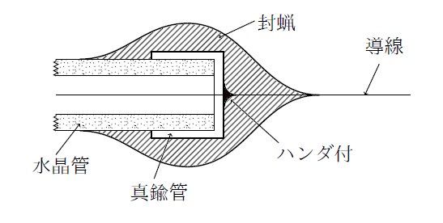
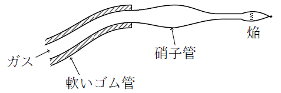

実験室の記憶
中谷宇吉郎
実験室の記憶というのは、追憶という意味ではなく、犬などの記憶というのと同じ意味で、実験室が記憶力をもっているという話なのである。
実験室が記憶力をもつなどというと、いかにも突飛な話のようである。しかし、実際に実験室の生活をした人には、その意味がわかるはずである。
一つの教室に属するいくつかの実験室には、指導者の風格などという高尚な話は別として、卑近な実験技術の知識がいつの間にか集積して来るものである。それはもちろん主としてその実験室に働く研究者の頭の中に蓄積して来るのであるが、教室員の頭脳の中ばかりでなく、実験室内の机とか細々した器械とかいうものにまで、いつの間にか浸みこんで来るような気がする。それは実験室に残る記憶といった方が、一番適切なものである。
もう十数年前のことであるが、ロンドンのキングスカレッジの地下室で、私はこの実験室の記憶というものを、しみじみ感じたことがある。英国の大学の物理研究室などというと、どこも皆立派な器械や装置が完備した大実験室と思う人があるかもしれないが、実際は日本の大学の実験室よりもずっと貧弱なものが多いのである。
キングスカレッジの地下室などは、その貧弱な例の方であった。その頃リチャードソンのところでは、長波長Ｘ線の研究が主としてなされていた。少し金のかかった装置というのは、五百ボルトの電池くらいのもので、あとは真空装置と電位計とがようやく実験の組数だけ揃っているという程度であった。
この仕事は、結局10-6ミリくらいの真空の中に、装置の主な部分を封入して、その中でいろいろな実験をして、その現象を外へ引き出した電線によって、電気的に測定することに帰した。それでかなり複雑な形の容器を全体高真空にひくというのが主な仕事であった。
今ならば、10-6ミリの真空はさほど驚くことでもないが、油拡散ポンプなどはもちろんまだ発明されておらず、ゲーデの三段の水銀拡散ポンプが、ようやく一般に用い出されていた時代だけに、この真空には随分骨を折らされたものであった。
真空技術のことを書いた本には、いろいろ詳しい記述があり、それを読むと、10-6ミリくらいの高真空は、何でもないように思われるかもしれない。特に、真空管の製作の場合には、それよりも一桁も二桁も高い真空が得られているようである。しかし真空管のように、一度作って封じてしまう場合は話は比較的楽であるが、研究の場合は何遍でも装置を作りかえて、時々内部をひらいて中の器械をとりかえなければならないので『真空技術』に書いてある通りに一々やるわけには行かない。『真空技術』に書いてある真空の技術は、いわば、女学校でならう家計のとり方のようなもので、生きてどんどん生長しつつある家庭は、その知識だけでは切り盛り出来ない。
電池と真空ポンプと測定装置との外には、ほとんど室の飾りになるような器械はなく、がらんとしたうすら寒い地下室であった。実験室全体の感じが薄蒼くすすけていた。
どこか中世の匂いが残っているこの実験室の中には、印度人の留学生が三人もいた。その方がかえって優秀な学生で、男女の英国人の研究生も実験室番の助手も、あまり映えない方であった。要するにこの実験室の雰囲気は、当時としては最高の真空で仕事をするという種類の研究には、不似合いなものであった。
ところがここでしばらく仕事をしているうちに気がついたことは、この実験室のどこかに、真空技術の知識が浸みこんでいると感じたことである。三、四カ月ここで働いていると、大抵の学生はいつの間にか真空に馴れて、10-6ミリの真空が普通になってくるのであった。もちろん、先輩が同じような仕事をしているので、新顔に灸所灸所は教えてくれるのであるが、そのせいばかりとは思われない。それだけのことならば、時おり実験室を訪ねて来る参観者は誰もきいて帰ることである。
話をきいて頭で理解したことと、その中へはいって身体で憶えたこととの間には大変なちがいがある。この頃、行としての科学などという言葉で表現されているものの中には、このこともはいっているのであろう。実験室の中へはいり込んで、働くことによって、身体で憶えこまなければわからないような種類の知識は、実験室内の人と物、すなわち実験室がもっているのである。そういう種類の知識は、実験室が活きて動いていれば、いつの間にかその実験室に蓄積されてくる。そしてそれが実験室の記憶となるのである。
キングスカレッジの地下室には、高真空の技術と同時に、10-12アンペア程度の極微電流を測定する力も養われていた。目的とする特殊Ｘ線の強さは光電子の電流で測定するので、象限電位計を使うのである。象限電位計で仕事をした経験のある人ならば、10-6ミリの高真空と象限電位計との取合わせは、随分いやな取合わせだと思われるであろう。
ところが不思議なことには、一番細い繊維を使って、感度を極端にあげた象限電位計が、ここでは、半年もすると誰にでも使えるようになるのであった。もちろん、英国の気候が日本と反対に夏比較的乾いていることも、その理由の一つであろうが、そればかりとはいえないような気がする。要するに、これも実験室に残る記憶なのであろう。
そういえば、ここで問題としていた高真空と象限電位計による極微電流の測定との間には、その技術のこつに、互いに一脈通ずるものがあった。両方ともに、恐るべきものは漏洩である。複雑な形の容器で、導線がそれから沢山外へ引き出されている場合なので、空気の漏洩によほど注意をしないと、とても10-6ミリなどという真空にはならなかった。電位計の方も同じことで、Ｘ線の電源として五〇〇ボルトないし一〇〇〇ボルトの電圧を同時に使っているので、この方も漏電を完全にとめない以上、10-12アンペアの精度は得られない。漏洩が本質的に測定や実験の成否を決定する場合には、ほとんどすべての点が完全でもただ一カ所に漏洩があれば万事が駄目になる。この場合には、九割まで注意が行き届いても、九割九分まで行っても、結果はひとしく零に近いものである。絹糸と針金とをよじ合わせたものは、針金の強さを示すが、針金に絹糸をついだ線は絹糸の強さしかない。今の場合はこの後者にちょっと似たところがある。
それで真空の方も、光電流測定の方も、全組織にわたって、万全の注意をはらう必要がある。しかし人間の注意力などというものは、案外たよりないもので、掏摸の眼から見ると、大抵の人間は馬鹿に見えるそうである。まして自然を相手の場合には、人間の五感は盲点だらけと思わなければならない。それで「万全」の注意を払うには、何かの原則をたてて、それに従って肉体的にはもちろん、精神的にも行動して行く必要がある。
私がキングスカレッジの実験室で感得したその原則というのは、いわば極めて月並なことであった。それは、一カ所一カ所についてそのところでは二度と気を使わなくてもよいように、きちんと事を片付けて行くということである。そういうとあまりに簡単でわかり切ったことのように聞えるかもしれないが、本当にこの原則を体得することは案外むずかしいのである。探し物をしてどうしても見つからなかった場合、同じ引出しを二度あけて見ない人は案外少ない。

真空について一つの例を挙げよう。容器を熔融水晶で作ることはあまり珍しくないとして、その枝の管から導線を引き出す場合、絶対に空気が漏れず、かつ一度封じてしまえば二度とそこには気を使わなくてもよいようにするには次の方法を採るのである。すなわち水晶管の頭にそれにきっちり合う真鍮の冠をかぶせ、その冠の孔から導線を引き出して、はんだでつける。そして全体をさわれないくらい熱くしておいて封蝋を塗り、その上をさらにすっぽり封蝋でつつんでしまうのである。封蝋というものは表面をてらてらに仕上げないと真空にはもたぬもので、その仕上げをするには、硝子管の頭をひきのばして、細くした口から、ガスを出して小さい焔を作り、その炎の先端から少し離れた所の熱せられた空気流を使うのである。ガスを送るゴム管は軟かい薄肉のものでないと、取扱いに不便である。手勝手の悪い操作をするのが、大切な容器をこわす一番の原因となる。

これだけの注意をしておけば、ちょっとくらい導線に無理をしても、ここから空気の漏れる心配はない。すなわちこの点には二度と気を使う必要はないのである。もっとも水晶に針金を封じ込む方法はちゃんとあるので、こういう旧式な手法を墨守するのは少し馬鹿気ているという議論も出るかもしれない。しかしそれは製作品の場合にいえることで、億劫がることなしに、しかも自分でとりはずしが出来なくては、生きた実験は出来ないのである。
水晶管に針金を封じ込むことは、真空技術一般からみれば、ほんの瑣細なことである。しかし技術の伝統を見るという立場からいえば、この一つの方法の中にも、英国の科学のある面を見ることが出来そうである。この方法には実は一つの弱点がある。それは封蝋の中に電気が浸み込んで、それが測定の時にまた少し出て来るので、電位計へ行く導線をこのようにすると、ちょっと測定の操作が厄介になる。しかしここではこの方法の良否が問題でなく、この方法を生んだ実験室の空気を話しているのである。
方法に議論の余地があるばかりでなく、実はこの研究全体が結局あまり豊穣な分野を拓くという性質のものではなかった。それでその後この研究室の研究はいつの間にか立ち枯れの姿になってしまった。ノーベル賞受賞者のリチャードソンもこの一系の研究ではついに大した収穫には到達しなかった。そういうことも見ておいてよいことなのである。さらに大切なことは研究室に残る伝統をよく見て来ることである。
一カ所ごとに腰を落付けて、きちんとその点を片づけて、ここまでは大丈夫という段階を一段一段と上がって行くやり方が、この実験室の気風であった。そういうやり方をするには、実験台の上に不必要なまたは不用になった機械や道具があってはならない。極端にいえば少なくともすぐ眼に見えるところにある戸棚の中にさえそういうものは置かない方がよいのである。そして実験台の上には広々とした空所のあることが必要である。
そういう心配りはしかし実際は不必要なのである。こういうふうな気風の実験室の中では、実験台の上に置かれた不用の小道具類は石の上に放り出された雑草のようにいつの間にか消えてしまう。そしてひどく毛色は変っているが、一種の明窓浄机の面影が実験室の中に出て来るのである。もちろん雑多な技術や知識が始終流れ込んでいるので、こういう自然淘汰が出来上がるまでには活きた長い時が必要である。実験室が一度死んでしまうと澱んだ水のように、この空気もくさってしまう。しかしそれが活きて流れておれば、いつの間にか適当な自然淘汰が行われて、必要な知識の集積が、実験室の記憶となって、その室の隅々まで浸みて残るのである。
以上の話は、私がキングスカレッジで経験した例について言っただけで、こういう実験室の記憶は、いろいろな沢山の種類の中の一つにすぎない。現に私たちが雪を作っている実験室に残っている記憶などは、まるでこれと反対のような性質のものである。私の方の実験室は、よくいえば雑草の乱れ咲いたような趣きがある。むしろ普通にいえば埃溜めのような実験室である。
そういう実験室の中でも、雪を作る技術は結構伸びて行くので、この頃は今まではとても出来そうもないと思っていた結晶まで、天然のものを凌ぐ美事さで出来るようになってきた。もっとも私自身はこの頃外の研究に急がせられているので、雪の方は任せきりという形になった。それでも時々行って見ると、徐々にしかし確実に雪を作る技術が、低温実験室の中に残って行くのが感ぜられる。もっともそれは雪係りの人の有能ということに大部分帰せられるのであるが、その知識が実験室にも浸み込んで来ているのである。それは、時たま三年目の学生が雪の仕事を始めることがあるが、一、二カ月もすると、前に私たちが大騒ぎをした程度の雪は、誰でも結構作れるので、内心驚くことがある。
実験台の上にはいろいろな小道具大道具が雑然と積み重なり、戸棚の中はもちろんその上までわけのわからぬ手製の器械でいっぱいになっている。その中をかき分けるようにして、皆が実験をしているのである。雪のような綺麗なものが、こういう所が好きだというのは、随分不思議であるが、結構育つところをみると、案外この環境が適しているのかもしれない、もちろんもっと実験室を整理して、一歩一歩をきちんとリチャードソンの所のようにやって行く方がさらによいのであろう。豚は汚い所が好きなのではなく、清潔な所を脇に作っておくとその方へ行くそうである。
ただ、問題は、こういう雑然とごたごたした実験室が、何故しらぬ間に出来上がったかというところにある。前の毛色の変った明窓浄机とこの雑草の園との差は、結局研究の性質の差なのであろう。雪の場合のように、どこから手をつけていってよいか見当のつかない問題の場合には、普通の人間にはどうしても手探りの研究になる。実験室いっぱいのあの雑多な用途不明の品々はこの雰囲気から生まれ、そしてこの雰囲気を作って来たものなのである。
実験は生きものである。寺田先生がいつか言われたように、ある器械をその精度の極限のところで使う場合には、魚刺で魚をつくような気持でやらねばならないのである。ちょっと向うがこちらの気に負けて静止した時を逸せず狙わなければ逃げてしまう。この感じは、実は研究全体についてもいえるのである。
一歩一歩と足場をかためて、一つ一つの点では二度と気を煩わされなくてもよいように、きちっと片をつけて進むといっても、それは相手であるところの自然法則を据え物と見ているのではない。いよいよ最後の測定に直面した時には、生きものを相手とするのである。10-6ミリの真空は真空として出来上がり、10-12アンペアの電位計の調整はまた別にそれだけはいつでも完全に用意されているというふうにして、さて測定にとりかかるというのではない。全部にわたって一応の足固めができたところで、すべての測定要素を最後の段階にじりじりと高めて行って、そこで一つの資料がとれるのである。この満を持している間に、つまらぬところでひっかかりが出来ないために一々の足場をあらかじめ固めておくのである。
雪の場合のように目標が茫漠としていて、手探りの盲目飛行の中で、一点の雲の切れ目を捕えて、機を逸せずその方へ突入して行くようなことをくり返して行く仕事では、小出しに満を持しては、次ぎ次ぎと矢を放ってみる必要がある。両者の研究方法は、このように考えてみると、別にそう本質的には変っていない。生きものを相手にしていることは同様であって、ただその相手の性質が少し異なるだけである。
自然法則が生きものであるとすると、その生きものが棲む環境がそれぞれ個性をもってくるのは当然である。雑草のようなものでさえ、それが繁茂しているところを見ると、いかにもその所を得ているものである。
実験室のような無生物に記憶が残るといえば不思議であるが、実験室という生きものが記憶力をもつと考えれば、それは当然のことである。
実験室へはいってみると、その実験室が生きているか死んでいるかは、すぐわかる。それは掃除が行届いているかいなかとか、設備が完備しているかいないかということとは別問題である。
実験室の生命の話は、いかにも荒唐無稽な話のようであるが、この生命を感知し得る神経を育てることは、研究者の一つの躾として、案外大切なことのような気がする。
●表記について
- このファイルは W3C 勧告 XHTML1.1 にそった形式で作成されています。